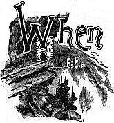
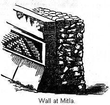

Early Spanish discoveries in Mexico—The Nahua tribes defined—Climate of Mexico—The Valley of Anahuac—Ruins at Tezcuco—The hill of Tezcocingo—Ruins at Teotihuacan—Ancient Tulla—Ruins in the province of Querataro—Casa Grandes in Chihuahua—Ancient remains in Sinaloa—Fortified hill of Quemada—The Pyramid of Cholula—Mr. Bandelier's investigations at Cholula—Fortified hill at Xochicalco—Its probable use—Ruins at Monte Alban—Ancient remains at Mitla—Mr. Bandelier's investigations—Traditions in regard to Mitla—Ruins along the Panuco River—Ruins in Vera Cruz—Pyramid of Papantla—Tusapan—Character of Nahua Ruins.
 THE ships of the Spanish admiral came to anchor before the Island of San Salvador, he had indeed discovered a "New World." It was inhabited by a race of people living in a state of society from which the inhabitants of Europe had emerged long before the dawn of authentic history. The animal and plant life were also greatly different from any thing with which they were acquainted. The Spaniards little suspected the importance of their discovery. Columbus himself died in the belief that he had simply explored a new route to Asia. A quarter of a century elapsed after the first voyage of Columbus before an expedition coasted along the shores of Mexico. This was the expedition of Juan De Grijalva, in 1518. He gave a glowing description of the country he had seen, which "from the beauty and verdure of its indented shores, and the lovely appearances of its villages, he called 'New Spain.'"1
This was followed, in the year 1519, by the history-making expedition of Cortez. The scene of his first landing was about forty miles south of the present town of Vera Cruz, but to this place they soon removed. At his very first landing-point he learned of the existence of what he was pleased to call a powerful empire, ruled by a most valiant prince. The accounts the Indian allies gave him of the power and wealth of this empire inflamed the imagination of Cortez and his followers. This was an age, we must remember that delighted in tales of the marvelous; add to this the further fact that Cortez was not, at the beginning of his expedition, acting with the sanction of his royal master; indeed, his sailing from the island of Cuba was in direct violation of the commands of the governor. It was very necessary for him to impress upon the court of Spain a sense of the importance of his undertaking.
Certain it is that the accounts that have been handed down to us, though read with wonder and admiration, though made the basis on which many writers have constructed most glowing descriptions of the wonders of the barbaric civilization, which they would fain have us believe, rivaled that of "Ormus and of Ind," are to-day seriously questioned by a large and influential portion of the scientific world. We have another point to be considered that is of no little weight, as all candid men must admit that it would influence the opinions the Spaniards would form of the culture of the Indians. As the man of mature years has lost the memory of his childhood, so have the civilized races of men lost, even beyond the reach of tradition, the memory of their barbaric state. The Spaniards were brought face to face with a state of society from which the Indo-European folks had emerged many centuries before. They could not be expected to understand it, and hence it is that we find so many contradictory statements in the accounts of the early explorers; so much that modern scholars have no hesitation in rejecting.
The main tribe of the empire which Cortez is said have overthrown is known to us by the name of the Aztecs; but as this name properly denotes but one of many tribes in the same state of development, it is better to use a word which includes all, or nearly all, of the tribes that in olden times had their home in the territory now known as Mexico. Careful comparisons of the various dialects of ancient Mexico have shown that, with the exceptions of some tribes in Vera Cruz, they all belonged to one stock-language; and so they are collectively known as the Nahua tribes.2
We wish now to inquire into the culture of this people, to see how much of the strange story that the Spaniards have to tell us has a reasonable foundation. We will state frankly that, though the literature on this subject is of vast proportions, yet it is very far from being a settled field. All accounts of the early explorers of the strange scenes, customs, and manners of the inhabitants, when they were first discovered, are so intermixed with self-evident fables, and statements that are undoubtedly exaggerations, that we have a most difficult task before us. We will first examine the antiquities of this section, compare them with those found in more northern regions, and then examine the statements of the early writers as to the customs of the people. We do not propose to do more than to follow after our leaders in thought, and try to make plain the conclusions to which they have arrived. We are not to deal wholly with a prehistoric people, though their origin is unknown. What we desire to do is to clear away the mists of three and a half centuries, and to catch, if possible, a glimpse of what was probably the highest development of prehistoric culture in North America just before the arrival of the Spaniards.
Mexico was surely a land well adapted to the needs of a prehistoric people. Along the coasts the ground is low. This constitutes what is known as the "Hot Country."3 The greater part of Mexico consists of an elevated table-land, which rises in a succession of plateaus. As we leave the coast region and climb the plateau, we experience changes of climate. If it were level, it would have mainly a tropical climate, but owing to the elevation we have just mentioned, it has mainly a temperate climate. The whole plateau region is cut up with mountains. The Sierra Madre, on the west, is the main chain, but numerous cross-ranges occur. The result is, a greater part of Mexico abounds in fertile, easily defended valleys—just such localities as are much sought after by a people in barbaric culture, constantly exposed to the assaults of invading foes.4
We may as well pass at once to the valley of Anahuac, the most noted in all the region, and learn of the antiquities of this central section. It is in this valley that the capital of the Mexican Republic is situated. All travelers who have had occasion to describe its scenery have been enthusiastic in its praise. The valley is mountain-girt and lake-dotted, and in area not far different from the State of Rhode Island. On one of the principal lakes was located the Pueblo of Tenochtitlan, the head-quarters of the Aztecs, commonly known as the City of Mexico. When Cortez first stood upon the encircling mountains, and gazed down upon the valley, he saw at his feet one of the most prosperous and powerful pueblos of the New World.
This is not the place to recount the story of its fall. Our present inquiry is concerned solely with the remains of its prehistoric age. The enthusiastic Spaniards would have us believe in a city of Oriental magnificence. We have no illustrations of this pueblo. It was almost completely destroyed by Cortez before its final surrender in August, 1521. It was then rebuilt as the capital city of New Spain. Of course, all traces of its original buildings soon disappeared. What we can learn of its appearance is derived from the accounts of the early writers, which we will examine in their proper place. After having surveyed the entire field of ruins, we will be much better qualified to judge of the vague statements of its former grandeur. A few relics have, indeed, been found buried beneath the surface of the old city. They illustrate the culture of the people, as will be noticed further on.
Directly across the lake from the Pueblo of Mexico was that of Tezcuco, the head-quarters of the second powerful tribe of the Aztec Confederacy. Traces only are recoverable of its former buildings. At the southern end of the modern town were found the foundations of three great pyramids. They were arranged in a line from north to south. Mr. Mayer says of these ruins: "They are about four hundred feet in extent on each side of their base, and are built partly of adobe and partly of large, burned bricks and fragments of pottery."5 He tells us further that the sides of the pyramids "were covered with fragments of idols, clay vessels, and obsidian knives." From other discoveries, it would seem these pyramids were coated with cement. The suggestion is made that on one of these pyramids stood the great temple of Tezcuco, which, an early writer tells us, was ascended by one hundred and seventeen steps.
In another part of the town a sculptured block of stone was found, of which this cut is given. "It appears to be the remains of a trough or basin, and the sculpture is neatly executed in relief. I imagine that it was designed to represent a conflict between a serpent and a bird, and you can not fail to remark the cross distinctly carved near the lower right-hand corner of the vessel." Bullock, who traveled in Mexico in 1824, has left a brief description of the ruins of what he calls a palace. "It must have been a noble building. . . . It extended for three hundred feet, forming one side of the great square, and was placed on sloping terraces raised one above the other by small steps. Some of these terraces are still entire and covered with cement. . . . From what is known of the extensive foundations of this palace, it must have covered some acres of ground."6 This last statement is doubtless exaggerated. From what we know of Indian architecture, these ruins were doubtless long, low, and narrow, and placed on one or more sides of a square, perhaps inclosing a court.
About three miles from the town of Tezcuco is a very singular group of ruins. This is the Hill of Tezcocingo. This is very regular in outline, and rises to the height of about six hundred feet. A great amount of work has evidently been bestowed on this hill, and some very far-fetched conclusions have been drawn from it. Probably as notable a piece of work as any was the aqueduct which supplied the hill with water, and this is really one of the most wonderful pieces of aboriginal work with which we are acquainted.
The termination of the aqueduct is represented in our next cut. This is about half-way up the hill, right on the edge of a precipitous descent of some two hundred feet. "It will be observed in the drawing that the rock is smoothed to a perfect level for several yards, around which seats and grooves are carved from the adjacent masses. In the center there is a circular sink, about a yard and a half in diameter and a yard in depth, and a square pipe, with a small aperture, led the water from an aqueduct which appears to terminate in this basin. None of the stones have been joined with cement, but the whole was chiseled, from the mountain rock."7 This has been called "Montezuma's Bath," simply from the custom of naming every wonderful ruin for which no other name was known after that personage; but this was not a bath, but a reservoir of water.
From this circular reservoir the side of the mountain is cut down so as to form a level grade, just as if a railroad had been made. This grade winds around the surface of the hill for about half a mile, when it stretches out across a valley three-quarters of a mile wide, an elevated embankment from sixty to two hundred feet in height. Reaching the second mountain, the graded way commences again, and is extended about half-way around the mountain, where it extends on another embankment across the plains to a range of mountains, from which the water was obtained.
This cut represents the embankment crossing the valley. Along the top of this way was laid the canals to transport the water, made of an exceedingly hard cement of mortar and fragments of pounded brick. It is estimated that nearly, if not quite, as much labor was expended on this aqueduct as on the Croton aqueduct that supplies New York City.8 This last statement is probably too strong, but, considering that this work was accomplished by a people destitute of iron tools, it is seen to be a most extraordinary work. From what we have already learned, this hill was evidently a very important place. On all sides we meet with evidences that the whole of the hill was covered with artificial works of one kind or another. On the side of the hill opposite this reservoir was another recess bordered by seats cut in living rock, and leading to a perpendicular cliff, on which a calendar is said to have been carved, but was destroyed by the natives in later days.9
Traces of a spiral road leading up the summit have been observed. In 1824 Bullock (who, however, is not regarded as a very accurate observer) "found the whole mountain had been covered with palaces, temples, baths, hanging-gardens, and so forth." Latrobe, somewhat later, found "fragments of pottery and broken pieces of obsidian knives and arrows; pieces of stucco, shattered terraces, and old walls were thickly dispersed over its whole surface."10 Mr. Mayer, after speaking of the abundance of broken pottery and Indian arrows, says: "The eminence seems to have been converted from its base to its summit into a pile of terraced gardens."
By one class of writers this hill is regarded as the "suburban residence of the luxurious monarchs of Tezcuco, . . . a pleasure garden upon which were expended the revenues of the state and the ingenuity of its artists."11 Mr. Bancroft has gathered together the details of this charming story,12 and tells us that the kings of Mexico had a similar pleasure resort on the Hill of Chapultepec, a few miles west of the city.13 It is sufficient at present to state that an explanation much simpler and more in accord with our latest scientific information can be given. It is more likely that this hill was the seat of a village Indian community. Its location was naturally strong. The water, brought with so much labor from a distance, furnished a supply for the purpose of irrigation, as well as bodily needs. The terraced sides show that every foot of ground was utilized, and the ruins of the palaces that Mr. Bullock mentions were the fast-disappearing ruins of their communal buildings. Owing to the cruel raids of the Aztec tribes, this place may have been deserted before the coming of the Spaniards, and thus no mention was made of it.
Still further to the north, about thirty miles from Mexico, is found another extensive field of ruins, which is called Teotihuacan, meaning "City of the Gods." The principal ruins now standing are the two immense pyramids (which are represented in this cut), which the natives call the "House of the Moon" and the "House of the Sun." We will describe the surroundings first. It is unquestioned but that here was a very extensive settlement in early times. When the Nahua tribes entered Mexico they probably found it inhabited. One very recent writer thinks that "nowhere else in America can you find a more imposing mass of ruins."14 He estimates that it was "a city upwards of twenty miles in circumference."
Other writers have also noticed its great extent. According to Thompson, "the ruins cover an area very nearly as large as that of the present City of Mexico, and the streets are as distinctly marked by the ruins of houses."15 And in another place Mr. Charney tells us "the city was of vast extent; and, without indulging in any stereotyped reflections on the vanity of human greatness, I will say that a more complete effacement is nowhere else to be seen. The whole ground, over a space five or six miles in diameter, is covered with heaps of ruins, which at first view, make no impression, so complete is their dilapidation."16
Of this mass of ruins we are told but little, beyond the general assertion that it consists of the ruins of buildings, temples, etc. But very recently M. Charney has uncovered the foundation of one of these houses. He calls it a palace. It was, in all probability, a communal building. It had two wings inclosing a court, and was located on a terraced pyramid. He found, on digging into the terrace in front of the ruins, a great number of sloping walls, covered with cement, containing small compartments, etc. M. Charney can not account for their presence.
In view of the discoveries further north, we would respectfully suggest that this was, in reality, the lower story of the building, whose flat roof formed the terrace in front of the second story, whose foundation M. Charney so happily discovered. But such suggestions as this are very unsafe to make, and must be supported by further discoveries before they are of any real value.
He found a large number of good-sized rooms, and speaks especially of one hall fifty feet square, in the center of which was six pillars, sloping from the base upwards. They, doubtless, served to support the roof. We regret that we have not been able to see M. Charney's ground plan of this ruin. Of the pyramids themselves we have quite full information. The larger one, that of the sun, is seven hundred and sixty feet square and two hundred and sixteen feet high. It will be seen that these dimensions throw the great mound at Cahokia into the shade. Though the base may not be quite as great, the height of the pyramid is over twice that of the mound. Three terraces are plainly visible. The surface was covered with cement, large slabs of which remain in their place. The moon pyramid is further north.
It is in all respects like that of the sun, but of smaller dimensions, being one hundred and fifty feet high. In early times these pyramids are said to have supported statues, but, if so, they have long since been thrown down. Their surface and the ground around is thickly strewn with fragments of pottery, obsidian knives, and other small relics. Running south from the House of the Moon, and passing a little to one side of the House of the Sun, are the remains of a wide, paved road. Its width is stated to be one hundred and thirty feet, and its length about two hundred and fifty rods.17
This road suddenly expands in front of the Moon, so as to suggest the idea of a Greek cross. Pieces of cement (with which this road was covered) are still visible in places. It is lined with mounds on either side, and they stand so close together as to resemble continuous embankments in some places. Speculations are abundant as to the object of this graded way. Tradition calls it the "Path of the Dead." Small mounds are very numerous over the surface. They may have been for burial purposes, but sculptured stones are found in them, and specimens of hard cement. This group of ruins is regarded as of very great antiquity.
We can easily see that the growth of the soil formed by the decay and detrition of the stone slabs of the pyramids, temples, and other buildings would be slow, especially as the rainfall is light. But in some localities it is more than three feet thick. In places three separate floors are observed, one over the other, pointing to as many successive occupations of the same sections by men.
About sixty-five miles to the north of Mexico was located Tollan, or Tulla. According to tradition, this was the capital city of the Toltecs, a mysterious people who long preceded the Aztecs. We are told that "extensive ruins remained at the time of the conquest, but very few relics have survived to the present time."18 M. Charney, whose labors we have referred to at Teotihuacan, succeeded also in making important discoveries here. He tells us that on the site of this ancient capital there is a hill, "about one mile long by half a mile broad, covered with mounds, plateaus, and ruins of all kinds."
He gives us the dimensions of two pyramids, as follows. The first is one hundred and ninety-six feet on each front, and forty-six feet high. The second is one hundred and thirty-one feet square, and thirty-one feet high. Both of these pyramids stood on raised foundations, which M. Charney calls esplanades. As no other pyramids are mentioned, we are to suppose these are the two principal ones. Perhaps they are also pyramids of the sun and moon. Our chief interest is concerned with the remains of the habitations he discovered here. He says: "I set the men to work at one of the many mounds upon the ridge, and soon found that I had hit upon a group of habitations." A general idea of this group of buildings is given in this passage: "The dwellings were united together in groups, and erected on isolated mounds, one in the middle, the others around about, the whole forming a sort of honey-comb, with its cells placed at different elevations."
We can not help being struck with the general resemblance of the descriptions here given and that of the ruins in the vicinity of the River Gila. The general tendency is seen to gather together in clusters, with, probably, the most important house in the center. As to the materials used in this building, we are told "they used clay and mud for the inside of the walls, cement to coat them, dressed stone and brick for casings, bricks and stone for stairways, bricks for pilasters, and wood for roofing the edifice. The houses bad flat roofs, consisting of timbers coated with cement. Of such timbers we find vast quantities."19
Of the arrangements of the rooms, he tells us, "The apartments that have been brought to light comprise a number of chambers, big and little, placed at different heights. We shall have no clear idea of the relation of these different chambers to one another, or of the mode of access to them through the labyrinthine passages and the numerous stairways, until the whole edifice has been unearthed."
This was not the only building he discovered. On digging into a mound supposed to be the support of a temple, he discovered it was the ruined foundation of a still grander house. He says, "It is much larger than the other one, stands on a pyramid, and has two wings inclosing a courtyard. The walls are thicker than those of the first habitation, and more strongly built. The apartments, too, are larger, though arranged in a similar fashion." Elsewhere he tells us that this building contained at least forty-three apartments, large and small. We presume very few will now question but what the buildings he here describes are ruined communal buildings, much like the structures in Arizona.
But perhaps the most interesting result of his labors was the proof that these ruins were certainly inhabited after the conquest—for how long a time we can not tell. This is shown by fragments of bones and other articles found in the refuse heaps. The bones were of such animals as the horse, swine, sheep, oxen, etc.—animals introduced into this country by the Spaniards. The fragments of pottery include specimens plainly not of Indian manufacture, such as fragments of porcelain, and that variety of glazed ware known as delf, and lastly, the neck of a glass bottle. It may be said that these fragments might have been left by a band of Spaniards who occupied the ruins in the early days of the conquest, perhaps long after the Indian owners had left. This is of course possible, but it is just as reasonable to suppose the fragments were left by descendants of the original builders.
Northward from Tulla is a small province, marked on the map Querataro. From the accounts at our disposal, which are very brief, we gather that this whole section is a tableland split up by ravines of great depths and precipitous sides; consequently one abounding in easily defended positions. It was found that all the projecting points, naturally strong, were rendered still stronger by the presence of ditches, walls, and embankments. Three groups of ruins are mentioned especially, and their location is marked on the map. At Pueblito there was, at an early day, plainly to be seen, the foundation of a large, rectangular building. The walls were built of stone laid in clay.
At Canoas, in the northern part of the State, there is a steep and strongly fortified bill, but particulars in regard to it are very meager. "There are, in all, forty-five defensive works on the hill, including a wall about forty feet in height, and a rectangular platform with an area of five thousand square feet."20 Ranas, the most northern one of the three sites mentioned, is regarded as the center of population in early times. "A small lake and a perennial spring are supposed to have been the attractions of this locality in the eyes of the people. On all the hills about are still seen vestiges of their monuments."
If we look at the map we will notice that we have gone but a little ways north of the valley of Anahuac. Yet, with the exception of the Gulf-coast, there are but few striking aboriginal ruins in Northern Mexico. At the time of the conquest the whole northern section was the home of tribes not generally considered to be as far advanced as those who lived in the section we have already described, and in regions further south. Yet it is certainly hard to draw the line between the culture of the two people. We are told that, these Northern tribes though styled "dogs," and "barbarians," by the Southern tribes, were yet "tillers of the soil, and lived under systematic forms of government, although not apparently much given to the arts of agriculture and sculpture."
This point is of considerable interest to us, theoretically; for it is a question from whence came the various Nahua tribes. We would naturally think, if they came from the North, we ought to find evidence of their former presence in the various Northern States of Mexico. We must remember, however, that a migrating people are not apt to leave monuments until they reach the end of their migration. Neither has the territory been as carefully explored as it should be. What accounts we can obtain of the remains in this section are certainly very meager. But one place in Sonora do ruins occur, and they have never been examined by competent personages.21 In Chihuahua occur ruins, evidently the works of the same people as built the separate houses to the west of the Rio Grande, in New Mexico.
These ruins have received the same name as those on the Rio Gila—that is, "Casas Grandes," meaning "Great House." This cut represents a view of these ruins. The river valley is here about two miles wide, and is said to be very fertile. Mr. Bartlett thinks there is no richer valley to be found from Texas to California. This valley was once the seat of a considerable population. Mounds are here found in considerable numbers. Over two thousand are estimated as occurring in a section of country sixty miles long by thirty in width.22 We wish we knew more about the mounds. They are said to contain pottery, stone axes, and other implements. It is possible, then, that these mounds are ruins of separate houses. At any rate, such are the only kind of ruins noticed in the upper part of this same valley by Mr. Bandelier.
The ruins in question are undoubtedly those of a rich and prosperous pueblo. They are so placed as to command a very extensive view. The river valley is cut through a plain, and has precipitous sides about twenty-five feet in height. The ruins in question are found partly in the bottoms and partly on the upper and more sterile plateau. The walls were made of adobe, and in consequence of their long exposure to the elements are very far gone in ruins; so much so that Mr. Bartlett was unable to make out the plan. But enough was seen to show that this was a pueblo much like the structure already described. They properly belong to the Arizona group of ruins.
We are told they face the cardinal points, and consist of fallen and erect walls. The portions still standing are from fifty to sixty feet high, or rather were that height in 1851. It is doubtful whether any thing more than a mound of adobe mud now marks the spot. The walls were highest in the center of the mass. At the distance of a few miles was a hill said to be fortified. But the descriptions of it are conflicting. Some represent it as crowned with a stone-built fortress two or three stories high. Others more reasonable, represent it as the site of a watch-tower, or sentry station, and that at regular intervals on the slope of the hill are lines of stone, with heaps of loose stones at their extremities.23 Probably the same fate overtook the tribes of this valley as did the sedentary tribes of the North. They would not willingly abandon a place so well suited to their needs. The presence of an invading foe, cruel and vindictive, alone accounts for this group of ruins.
In Sinaloa we have no very definite account of ruins. However, Mr. Bandelier says, the existence of ancient villages in that section is certain, and that from "Sinaloa there are ample evidences of a continuous flow Southward."24 There are no ruins worth mentioning in any of the other States, excepting Zacatecas, where we find a ruin of great interest. This is at Quemada, in the southern part of the State. The name is taken from that of a farm in the near neighborhood. The ruins are situated on the top of a hill, which is not only naturally strong, but the approaches to it are fortified. The hill ascends from the plain in a gentle slope for several hundred yards, it then rises quite precipitously for about a hundred and fifty feet. The total height of the hill above the plain is probably not far from eight hundred feet.25
At all points where the approach to the top of the hill is not steep enough to form a protection of itself, the brow is guarded by walls of stone. This is especially true of the northern end of the hill. One peculiar feature of this place is the traces of ancient roads, which can still be clearly distinguished crossing each other at various angles on the slope we have mentioned. They can be followed for miles, and are described as being slightly raised and paved with rough stones. In places on the slope, their sides are protected by embankments.
Considerable speculations have been indulged in as to the purposes for which these roads were used. It has been suggested that they were the streets of an ancient city which must once have existed on the plains; and that the fortified hill, with the ruins on its summit, was the citadel, the residence of their rulers, and the location of their temples. But we think a more reasonable view is that all of the city that ever stood in that neighborhood was on the hill summit, and that these streets were for religious purposes, reminding us in this respect of the graded ways and traces of paved streets sometimes met with in the Mississippi Valley. In proof of this view, it is said that many of them, after being followed for a long distance, are found to terminate in a heap of stones, which are evidently the ruins of a regular pyramid. In opposition to both of these views, it has been suggested that the surrounding plain was low and marshy, and that the object of these causeways was to secure a dry passage, which explanation is certainly very reasonable.
Of the top of the hill, it may be sufficient to state that it is of irregular shape, half a mile in length from north to south, and of varying width, but on an average one thousand feet wide. The approach to the top of the hill was strongly guarded. Although buildings were observed covering the whole top of the hill, yet they were in two principal groups. This cut, though but one of many, will give us very good ideas of all the ruins. It is seen to be an inclosure. It is on a small scale. It was one hundred and fifty feet square. We notice terraces on three sides. These terraces are three feet high by twelve wide, and in the center of each side are steps by which to descend to the square.26 Each terrace is backed by a wall, portions of which are seen in the engraving. These walls are twenty feet high by eight or nine in thickness. The openings seen in the wall are not properly doors, as they extend to the top of the wall.
This court, encompassed by terraces, is a peculiar feature. It is different from any thing we know of, either north or south.27 Courts, surrounded by buildings located on terraces, are common enough, but all accounts of these ruins say nothing of buildings. We remember the inclosures that surrounded the houses clustered in groups on the Rio Gila. We think this comes near to being a development of the same idea. The low walls of the former inclosure are here quite pretentious pieces of masonry. In some cases two or more of these inclosed courts are joined by openings.
The opening in the wall on the right of the engraving leads into a perfect inclosed square of two hundred feet. In one case a range of pillars was noticed parallel with the walls, and distant twenty-three feet. These are supposed to have supported the roof of the portico, and houses of a rude description might have been ranged along under this roof, which has since completely vanished. Back of this square, but not very well shown on the drawing, rises a precipitous hill. A pyramid is placed in the center of the side towards the hill. It is only nineteen feet high,28 but is divided into five stages or stories.29
This pyramid will serve as an example of numerous other pyramids scattered over the summit of the hill. They are made of stone. The largest one, whose dimensions are given, is fifty feet square, and the same in height. In front of the pyramid, and in the center of the square, are the remains of an altar. In view of the altar and pyramid, within the inclosed square, we may suppose this to have been dedicated to their religion. As if to confirm this belief, is the statement that on the hill to the back of the pyramid are numerous tiers of seats, either broken in the rock or built of rough stone. The people seated on them would be conveniently located as regards both sight and hearing of what transpired there.
From an Indian's point of view, this hill was very strongly fortified. It would be almost impossible for an enemy to capture the settlement on its summit. The surrounding country was probably fertile, and a large body of Indians could have lodged within the fortified inclosures. It has some peculiar features, which have been pointed out. There is now no water on the hill, but traces of what is supposed to be an aqueduct are observed, as well as several tanks, and at one place a well. There is not an appearance of great antiquity about these ruins, and yet native traditions are silent in regard to them, and but one of the early writers refers to them, and he had not seen them.30
West of the central basin the remains are more numerous than to the north, but they are not very striking, and it is scarcely worth our while to stop and examine them. About sixty miles in a south-easterly direction from Mexico is the modern town of Cholula. This has grown at the expense of the ancient city of Cholula, grouped around the famous pyramid of that name. This was the Mexican "Tower of Babel." The traditions in regard to it smack so strongly of outside influence that but little reliance can be placed on them. They are evidently a mixture of native traditions and Biblical stories. Like Teotihuacan and Tulla, this is regarded as a relic of Toltec times. This is but another way of saying that it is older in time than the majority of ruins.
At the time of Cortez's march to Mexico Cholula was a very important place. In his dispatches he says: "The great city of Cholula is situated in a plain, and his twenty thousand householders in the body of the city, besides as many more in the suburbs." He further states that he himself counted the towers of more than four hundred "idol temples."31
We must remember that this is a Spanish account, and therefore exaggerated. Still, after making due allowance for the same, it would remain an important aboriginal settlement. We have no reliable data of the population at the time of the conquest. From documentary evidence Mr. Bandelier has shown that while Cholula was certainly a populous Indian pueblo, it is a misnomer to call it a city. It was a group of six distinct clusters, gathered around a common market. He estimates that its population may possibly have been thirty thousand.32 All explorers have mentioned the fertility of the plain in the midst of which this monument is found.
But this plain is almost destitute of easily defended positions; which fact has an important bearing on the purpose for which the great mound was erected. At a distance it presents all the appearance of a natural hill. The casual observer would not believe it was entirely the work of men. "In close proximity," says Mr. Bandelier, "the mound presents the appearance of an oblong conical hill, resting on projecting platforms of unequal length. Overgrown as it is with verdure and partly by trees, and with a fine paved road leading to the summit, it looks strikingly like a natural hill, along whose slopes the washing of the rains and slides have laid bare bold bluffs, and into whose bulk clefts and rents have occasionally penetrated."
This celebrated mound or pyramid has lately been the subject of a very careful study by Mr. Bandelier. The illustration we present gives us a very good idea of the present appearance of the mound. The mass is probably solid throughout, and if there is a natural hill in its center, it must be a very small one. The height of the central higher mass is very nearly two hundred feet.33 The present appearance of the summit is entirely due to the Spaniards. At the time of the conquest the summit was convex; the friars had it leveled in order to plant a cross. The area of this upper platform is not far from two-thirds of an acre. It is now paved and surrounded by a wall.
In the illustration we detect the appearance of terraces. These are level areas, not all of the same height; neither do they extend entirely around the mound. In fact, the present appearance indicates three projections, or aprons, surrounding and supporting a conical hill, and separated from each other by wide depressions. This central mound, with its three projections, rests upon a very extensive platform, which was probably cross-shaped. This platform seems to have been about twelve feet high, and covered an area of at least sixty acres.
The object for which this great pile was erected is a topic that has exercised the thoughts of many scholars. Some have supposed it was a burial mound. Some years ago, while in constructing a road from Pueblo to Mexico, the first terrace or story was slightly dug into, and disclosed a chamber, which contained two skeletons, two idols, and a collection of pottery. Yet, before deciding it to be a burial mound, it will be necessary to show the presence of tombs near the center.
We have referred to the results of Mr. Bandelier's explorations. He made a very thorough study of this great pyramid—more complete than any that had hitherto been made—and his results should have corresponding weight. He finds that the materials of which the adobe brick is composed are exactly the same as that of the surrounding plain. This does away with one old tradition, that the bricks were manufactured at a distance, and brought several leagues to their destination by a long line of men, who handed them along singly from one to another.
From the manner in which the bricks are laid, and from their variation in size, he concludes that the structure was not all erected at one time, but that the mound is the accumulation of successive periods of labor. From this it follows that it was built to serve some purpose of public utility, and not as a token of respect for some individual. Wherever found, these great works show the same evidence of not being all completed at once. This was true of the North; we shall also find it true of the South. Charney noticed the same thing in the house at Tulla. Nothing is more natural than that an Indian community would increase their buildings as the tribe increased.
Mr. Bandelier's final conclusion in regard to the purpose of its erection is one of great interest, but not at all surprising. "If we imagine the plateaus and aprons around it covered with houses, possibly of large size, like those of Uxmal and Palenqué,34 or on a scale intermediate between them and the communal dwellings of Pecos and many other places in New Mexico,35 we have then, on the mound of Cholula, as it originally was, room for a large aboriginal population. The structure, accordingly, presents itself as the base of an artificially elevated, and therefore, according to Indian military art, a fortified, pueblo."
But this does not remove from it the air of mystery. Long-fallen indeed are the communal walls. It was not simply a few years ago that these pueblo-crowned terraces were reared. The date of its erection is hid in the dim traditions of the past. The traditions of the Nahua tribes, who came at a far later date, speak of it as even then standing on the plain. Scattered over the plain are other ruins of a somewhat different nature from the general ruins in the valley. These may be the ruins of works erected by the same class of people as built the mounds. Especially is this thought to be true of ruins found on the slopes of neighboring volcanoes.
To the south-west of Cholula are the ruins of Xochicalco, which, by some, are pronounced to be the finest in Mexico. There are many points of resemblance between this ruin and Tezcocingo. The meaning of the word is "Hill of Flowers." The hill is a very regular, conical one, with a base nearly three miles in circumference, and rises to a height above the plain of nearly four hundred feet.36 The hill is considered to be entirely a natural formation; but it probably owes some of its regular appearance to the work of man. Around the base of the hill had been dug a wide and deep ditch. When Mr. Taylor visited the place, the side of this moat had fallen in, in many places, and in some quite filled up—but it was still distinctly visible.37 The whole surface of this hill was laid off into terraces.
Five of these terraces, paved with blocks of stone laid in mortar, and supported by perpendicular walls of the same material, extend, in oval form, entirely around the whole circumference of the hill, one above the other. From the accumulation of rubbish, these terraces are not easy to detect in all places. Probably, at one time, there was some easy means of access from one terrace to the other, but they have disappeared—so that now the explorer has to scramble up intervening slopes of the terraces as best he can. It is probable that defensive works once protected these slopes.
Mr. Mayer says: "At regular intervals, as if to buttress these terraces, there are remains of bulwarks shaped like the bastions of a fortification."38 "Defense seems to have been the one object aimed at by the builders." The top of the hill is leveled off. Some writers represent that a wall of stone was run along the edge of the summit but others think that the whole top of the hill had been excavated, so as to form a sunken area, leaving a parapet along the edge. This summit-platform measured two hundred and eighty-five feet by three hundred and twenty-eight feet. Within this area were found several mounds and heaps of stones. The probabilities are that it was once thickly covered with ruins. In the center of this sunken area are the remains of the lower story of a pyramid, which the inhabitants in the vicinity affirm to have been once five stories high.
To judge from the ruins still standing, this must have formed one of the most magnificent works of aboriginal skill with which we are acquainted. This cut gives a general idea of the ruins from the west. We presume the broken appearance presented by this side is in consequence of the removal of stones by planters in the vicinity for their own use. It seems they have used this monument as a stone-quarry. This pyramid, or the first story of it, was nearly square—its dimensions being sixty-four feet by fifty-eight.
The next cut is an enlarged drawing of the north-west corner seen in the first drawing. Notice the grotesque ornamentations on it. The ornaments are not stucco-work, but are sculptured in bas-relief. As one figure sometimes covers parts of two stones, it is plain they must have been sculptured after being put in position. The height of this front is nearly fifteen feet. In the left-hand corner of this sculpture will be perceived the bead of a monstrous beast with open jaws and protruding tongue. This figure is constantly repeated in various parts of the façade. Some have supposed it to be a crocodile. The rabbit is another figure that constantly reappears in portions of the wall.
We can scarcely realize the labor involved in the construction of this pyramid and the terraced slope. Some idea may be formed of the immense labor with which this building was constructed from measurements made of several of the masses of porphyry that compose it. One stone was nearly eight feet long by three broad. The one with the rabbit on is five feet by two and a half. When it is recollected that these materials were not found in the neighborhood, but were brought from a great distance, and borne up a hill more than three hundred feet high, we can not fail to be struck with the industry, toil, and ingenuity of the builders, especially as the use of beasts of burden was, at the time, unknown in Mexico. Nor was this edifice, on the summit, the only portion of the architect's labor. Huge rocks were brought to form the walls supporting the terraces that surrounded the hill, a league in circumference, and the whole of that immense mass was eased in stone. Beyond these terraces, again, there was still another immense task in the ditch, of even greater extent, which had to be dug and regularly embanked.39
Now, what was the object of all this labor? This must have been the center of a large settlement. It seems that the surrounding hills—or, at least, some of them—were also terraced. Mr. Taylor says: "On the neighboring hills we could discern traces of more terraced roads of the same kind. There must be many miles of them still remaining." In a Mexican book we are told "adjoining this hill is another higher one, also covered with terraces of stone-work in the form of steps. A causeway of large marble flags led to the top, where there are still some excavations, and among them a mound of large size." Mr. Latrobe, from the top of the "Hill of Flowers," saw that it was the center towards which converged several roads, which could be traced over the plain. The road he examined was "about eight feet in breadth, composed of large stones tightly wedged together." It is extremely probable that in Xochicalco we have another instance of a strongly fortified hill, on the top of which was their pueblo, arranged around their teocalli, or temple.40
In our description of this ruin we must not forget to mention some curious underground chambers, excavated in the hill itself. On the northern slope, near the foot, is the entrance to two galleries, one of which terminated at the distance of eighty feet. The second gallery is cut in solid limestone, about nine feet square, and has several branches. The floors are paved with brick-shaped blocks of stone. The walls are also, in many places, supported by masonry, and both pavement, walls, and ceilings are covered with lime-cement, which retains its polish, and shows traces, in some parts, of having had originally a coating of red ocher. The principal gallery, after a few turns, finally terminated, or appeared to, in a large room eighty feet long, in which two pillars were left to support the roof. In one corner of this room there was a dome-shaped excavation in the roof, from the apex of which a round hole about ten inches in diameter extended vertically upwards.
The natives say there are still other excavations. We have seen no good explanation of the uses of these excavations. The labor in constructing them must have been very great. In the province of Oaxaca we shall find several groups of ruins. In all probability those known and described are not more numerous than those unknown. The class of ruins represented by Quemada, Tezcocingo, and Xochicalco (that is, a hill strongly fortified, with traces of a settlement on the summit, mounds, foundations of communal houses, and pyramidal structures) are also to be found here. At Quiotepec we have very meager accounts of such a ruin. The hill is over two miles in circumference and a thousand feet high. A running stream has rendered one side of the hill very steep and precipitous, but the other sides are terraced.
One of the terrace-walls at the summit is about three hundred and twenty feet long, sixty feet high, and five and a half feet thick.41 On the summit of the hill are found great numbers of mounds, foundations of small buildings, as well as ruins of statelier buildings, called by some palaces, but which were probably regular communal structures; also the pyramid base of a temple. At different points near the summit of the hill are three tanks or reservoirs, one of which is sixty feet long, twenty-four feet wide, and six feet deep, with traces of steps leading down into it.
Still further south, near the center of the state at Monte Alban, is a more extensive group of ruins on the same general plan as the one just described. In this case, from the banks of a stream, there rises a range of high hills with precipitous sides. At their summit is an irregular plateau half a mile long by nearly a quarter of a mile wide. M. Charney states that a portion of this plateau is artificial. He represents the whole surface as literally covered with blocks of stone—some sculptured—the ruined foundations of buildings, terraces, and so forth. He regards it as one of the most precious remains of aboriginal work, and this is the view of Mr. Bandelier also. It is to be regretted that we have not more details of such interesting ruins. We, however, would learn but little new from them. One ruin is spoken of as an immense square court, inclosed by four long mounds, having a slight space between them at the ends. It is extremely probable that these mounds once supported buildings.
The most celebrated ruin in Oaxaca is Mitla. These are the first ruins we have met that, by their strange architecture and peculiar ornamentation, suggest some different race as their builders. The present surroundings are of the gloomiest character. The country is barren and desert. The valley in which the ruins are located is high and narrow, but surrounded by bleak hills. The soil is dry and sandy, and almost devoid of vegetation. The cold winds, blowing almost constantly, sweep before them great clouds of sand. A small stream flows through this dreary waste, which, during the rainy season, is a raging torrent. "No birds sing, or flowers bloom," around these old ruins. Appropriately enough, tradition speaks of this as the "Place of Sadness," or "Dwelling of the Dead." As to the extent of territory covered by the ruins, we have not been able to learn further than the general statement that at the time of the conquest they covered an immense area.42
 Mr. Bandelier found, besides two artificial hills, traces of thirty-nine distinct edifices, and, as he thinks these are all the buildings that ever stood there, it is manifest that this was not a city in our sense of the word. Two or three of the buildings were constructed of adobe, plastered, and painted red. The others were built of stone. Of these latter the greater part stands upon the ground, but a few are built upon elevated terraces, composed of stone and earth heaped together and faced with stone. In one group of four buildings the terraced foundation contained a basement—in one case, at least—in the form of a cross. The purpose of this cellar or basement left in the artificial foundation is unknown. Some think they were used for burial purposes but it is more likely they were general store-rooms. The arrangement of these buildings was the same as elsewhere. That is, so placed as to inclose a court. This illustration shows us the method of constructing the walls of the building. We notice two distinct parts. The inner part is built of broken stones laid in tolerably regular courses in clay. There was no mortar used. This inner core is much the same sort of work as the masonry in the pueblos of Arizona. A facing was put on over this inner core, which served both for ornament and for strength. This illustration is a corner of one of these buildings, and gives us in excellent idea of the peculiar ornamentation employed at Mitla. Mr. Bancroft gives us a clear idea of how this facing was put on: "First, a double tier of very large blocks are placed as a base along the surface of the supporting mound, projecting two or three feet from the line of the wall, the stones of the upper tier sloping inward. On this base is erected a kind of framework of large, hewn blocks with perfectly plain, unsculptured fronts, which divide the surface of the wall into oblong panels of different dimensions."43
It would, then, seem as if the panels were thickly coated with clay. Into this clay was then driven small, smoothed blocks of wedge-shaped stones, in such a way as to cover them with geometrical ornamentations, which, though not absolutely symmetrical, present a striking and agreeable appearance. Each section of the wall presents a different pattern, but this difference is so slight that the general effect is harmonious.44 This mosaic ornamentation is found in some of the inner facings of the walls as well. In general, however, the walls on the inside were covered with mortar and painted.
Some of the blocks of stone forming the basement, the framework of the panels, and the lintels of the door are of great size, and the lintels were in some cases sculptured. One of the largest rooms at Mitla is represented in the preceding cut. The peculiar feature about it is the range of columns seen in the drawing. The inner plastering has fallen, exposing the rough wall. The columns are simple stone pillars, having neither chapter nor base. It is generally supposed that these pillars supported the roof. As in the pueblo buildings to the north, as well as the Toltec house at Tulla, the roof was probably formed of the trunks of small-sized trees laid close together and covered with clay and cement.
We have as yet not seen any thing in these ruins sufficiently striking to justify the somewhat extravagant assertion made about them. The ornamentation is indeed peculiar and tasteful, but aside from that, we see no reason to speak of them as magnificent structures. The buildings are low and narrow; the rooms are small, dark, and illy ventilated. "Light could only have been admitted from one side, and the apertures for this purpose were neither lofty nor broad." Mr. Bandelier fittingly characterizes the ruins as the "barbaric effort of a barbarous people." Those scholars who think we have in Mexico the ruins of a highly civilized, powerful empire, regard these ruins as in some way set aside for mourning purposes of the royal family. "According to tradition," says Mayer, "They were . . . intended as the places of sepulture for their princes. At the death of members of the royal family, their bodies were entombed in the vaults beneath; and the sovereign and his relatives retired to mourn over the departed scion in the chambers above these solemn abodes, screened by dark and silent groves from the public eye." Another tradition devotes the edifices to a sect of priests, whose duty it was to live in perfect seclusion, and offer expiatory sacrifices for the royal dead who reposed in the vaults beneath.45
With all due respect to traditions, we think a much more reasonable explanation can be given. One reason why Mitla has been regarded as such an important place, is because it has been assumed that there were no other ruins like it, especially in Mexico. This, according to Mr. Bandelier, is a mistake. He examined one or two quite similar ruins in the near vicinity, and at another place he found a group of ruins in every way worthy of being compared to Mitla, but he was not able to examine them. So we must either decide there were a number of these "Sepulchral Palaces," or else adopt some simpler explanation. But still stronger is the fact, that at the time of the conquest, Mitla was an inhabited pueblo. We have the account of a monk who visited it in 1533. He mentions in particular the ornamentation of the walls, the huge doorways, and the hall with the pillars. It is extremely probable that if it was devoted to any such purpose, some mention would have been made of it. We think Mr. Bandelier is right when he concludes that these structures are communal buildings, but little different from others.
As for the other ruins in Oaxaca, we will not stop longer to examine them. At Guingola, in the southern part of the State, was found a ruined settlement. The principal ruins were located on the summit of a fortified hill, which, from a brief description, must have been much like those we have already described.
We will now turn our attention to the Gulf-coast. The whole coast region abounds in great numbers of ruins. It is in this section, however, that tribes of people belonging to a different family than the Nahua tribes, were living at no very distant time in the past. So it is not doubted but that many of these ruined structures, perhaps the majority of them, were the works of their hand. When Cortez landed on the coast, in the neighborhood of Vera Cruz, he was received by the Totonacas. These were a Nahua tribe, but both to the north and south of them were Maya tribes.46 We will, however, describe the ruins in the present State of Vera Cruz under one head.
We notice, on the coast, the Gulf of Tampico, into which pours the river Panuco. From an antiquarian point of view, this is a most interesting locality. It was here that a feeble remnant of De Soto's disastrous expedition found a refuge in 1543. And it was here that, at a far earlier period, according to the dim, uncertain light of tradition, the ancestors of some of the civilized nations of Mexico made their first appearance; of this, more hereafter. Certain it is that, commencing at this river, we find ourselves in a land of ruins.
It is to be regretted, however, that our information is not definite in regard to them. We are told, in general terms, of a great field of ruins, but in the absence of cuts, can scarcely give a clear description of them. On the northern bank of the Panuco, Mr. Norman found at one place the ground "strewn with hewn blocks of stone and fragments of pottery and obsidian."47 They were found over an area of several square miles. Many of the blocks of stone were ornamented with sculpture. They imply the presence, in former times, of some kind of buildings. We can not form an opinion as to the number, style, etc. Mr. Norman regards them as the ruins of a great city, the site of which is now covered with a heavy forest.
Amongst these ruins are about twenty mounds, both circular and square, from six to twenty-five feet in height. Some authorities think that the Mound Builders went by water from near the mouth of the Mississippi to this region. To such as place any real reliance on this theory, these mounds are full of interest. But some details of construction would seem to indicate a different people as their builders than those who reared mounds in the Gulf States of the Mississippi Valley. The main body of the mound is earth, but they are faced with hewn blocks of sandstone, eighteen inches square and six inches thick. Although one of the mounds is quite large, covering two acres, yet in but one instance was a terraced arrangement noticed. As a general thing, the facing of stone had fallen to the ground, and some of the smaller mounds had caved in; showing, perhaps, that they were used as burial mounds. In other cases the mounds had entirely disappeared, leaving the stone facing on the surface. This may account for some of the stones scattered over the surface. A few miles away there is another group of circular mounds.
Across the river in Vera Cruz, from very slight mention, we gather that, substantially, the same kind of ruins occur. At Chacuaco the ruins are said to cover three square leagues—but we have no further account of them than that. Small relics of aboriginal art are said to be common, and mention is made of mounds. The antiquities of Vera Cruz are a topic about which it is very difficult to form correct ideas. It will be noticed that it presents a long stretch of country to the Gulf. The land near the coast is low, and very unhealthy. About thirty miles from the coast we strike the slope of the mountains bounding the great interior plateau. This section is fertile and healthy, and was, evidently, thickly settled in early times. We must remember that it is always in a mountainous section of country that a people make their last stand against an invading foe. It was in these mountain chains where the Maya tribes made their last stand against the invading Nahua tribes, and even this line was pierced through by the Tonacas.
It is not strange, then, to find abundant evidence of former occupation in all this section of country. One thing in its favor was the number of easily defended positions. The country is cut up by deep ravines. The early inhabitants used all the land that was at all available for agricultural purposes. On steep slopes they ran terraces to prevent the soil from washing. In the smaller ravines they located great numbers of water-tanks, from which, in the dry season, they procured water to irrigate their land. Of this section, we are told, "there is hardly a foot of ground in the whole State of Vera Cruz in which, by excavation, either a broken obsidian knife, or a broken piece of pottery, is not found. The whole country is intersected with parallel lines of stones, which were intended, during the heavy showers of the rainy season, to keep the earth from washing away. The number of these lines of stones shows clearly that even the poorest land, which nobody in our day would cultivate, was put under requisition by them."48
They no less conclusively show that a considerable body of people had here been pressed by foreign invasion into a small, contracted space. It is useless to attempt a more particular description of these ruins. In the absence of cuts, the description would only prove tiresome. Pyramids, both with and without buildings on their summits, are comparatively frequent. As they would be noticed where other ruins would be overlooked, we have some cuts of the more remarkable ones. The preceding cut is the pyramid at Papantla.
The base is ninety feet square, and the pyramid has seven stories, as seen in the engraving. Only the last one contains apartments; with this exception, the pyramid is solid. Stairways in front lead up to the top. Mr. Mayer says "there is no doubt, from the mass of ruins spread over the plain, that the city was more than a mile and a half in circuit." But we have no further description of them. Other localities with pyramids and ruins are known. At Tusapan occurs this ruin, which may be taken as a type of all the pyramids in this region. This was the only building remaining standing at Tusapan; but, from the ruins lying about, this is not supposed to have been the grandest structure there.
This will complete what we have to say of the ruins in territory occupied by the Nahua tribes. Other remains of their handiwork we will examine when we treat of their customs and manners. We will now turn our attention to the ruins in the territory of the Mayas. As the culture of these two people is so similar, we will devote but one chapter to the two. Comparison is the great means we have of fixing in the mind points we wish to keep. We have to admit that the treatment of the Nahua ruins is not very satisfactory; but it is difficult to obtain accurate information in regard to them. We think what resemblance can be traced, is more in the direction of the Pueblo tribes than of the Mound Builders. The first ruin found in Mexico, Casa Grandes, in Chihuahua, is evidently but another station of Pueblo tribes.
The fortified hill at Quemada is apparently but a further development of the clustering houses with the little inclosures noticed on the Gila. Mounds are, indeed, mentioned in a number of localities, but they seem to be more nearly related to the terraced foundation of buildings observed in Arizona than to the mounds of the Mississippi Valley. Surely as striking a ruin as any is at Mitla, but Mr. Bandelier does not hesitate to compare it with some in the Pueblo country. Now, it is very unsafe and very unsatisfactory to trace resemblances of this kind, and we do not assign any especial value to them. But it only shows that, so far as this method is of use, it points to a closer connection with the Pueblo tribes than with the Mound Builders.
REFERENCESChapter XII: The Prehistoric
Americans.
Chapter XIV: The Maya Tribes.
{kind=link}